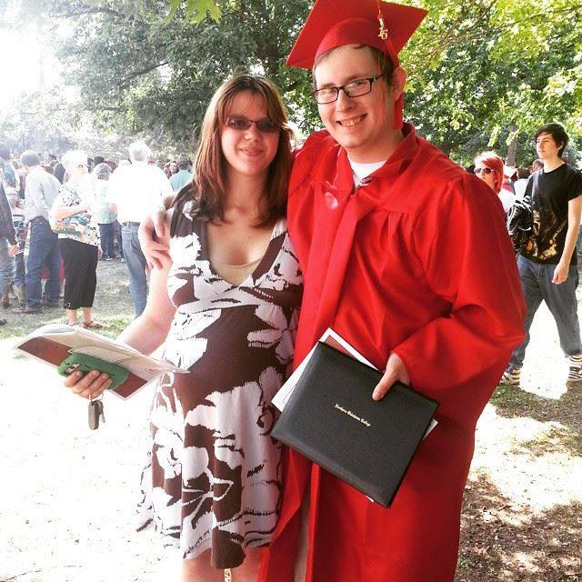

About Me

Welcome to my portfolio. My name is Michael Haggard. I'm a 24 year old programmer from Kansas. I'm currently attending a full stack web development coding bootcamp through the University of Kansas, and have an Associate's Degree in Computer Science from Northern Oklahoma College. I'm looking to begin a career in web development, and I am always striving to further improve my skills. Outside of programming, I spend most of my time with my four wonderful children and my beautiful wife. I listen to way too much music, enjoy fine bourbon, write and worldbuild, and, of course, play video games.
On this site, you'll find examples of my programming work as well. As of writing this, my portfolio is quite bare. Despite this, I have experience in several programming languages. These include Visual Basic, Java, and C++, as well as web development frontend languages such as HTML, CSS and JavaScript. I also have some experience working with Ruby through basic video game development. While I plan on a career in web development, I really enjoy every aspect of coding. In addition to programming experience, I also have experience in other aspects of IT. I've worked for a defense contractor (details fall under a NDA, unfortunately) running an advanced WiFi network, and have built networks for several organizations and non-profits.
My current projects are a simple WordPress blog located here, various assignments for my programming class, and a very long-term RPG for mobile phones. I plan on expanding my portfolio and refining my skills in order to build a career for myself and my family. Feel free to use the contact page if you need to reach me through email.